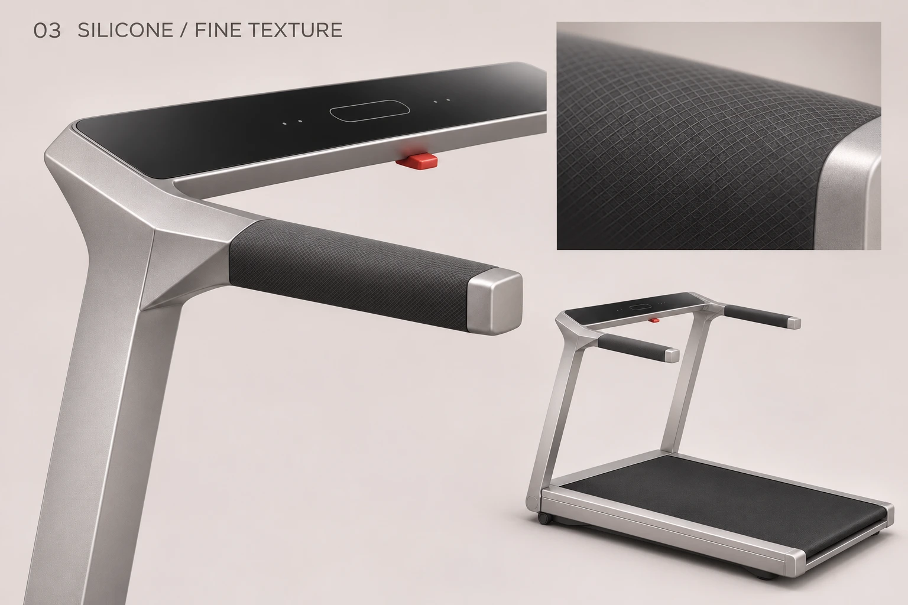

凌序 · 四种客制化把手
依照用户三张材质参考修订粗筋防滑、皮质与浅纹理硅胶三款。沿用原把手轮廓和折面肩部；该肩部未获单独选定。
01 · 斜筋防滑握把（细化）
斜筋收窄、加密并降低起伏，边缘圆润过渡；保留清楚纹理，让表面更细致。

02 · 皮质握把
参考细颗粒皮纹、油润柔光与规整缝线，包覆略饱满；质感仍待用户评审。

03 · 浅纹理硅胶握把
保持原握把截面与体量，细密交叉纹仅作浅起伏，不做宽平掌托。

04 · 心率监测把手（沿用）
本轮未改，仍为外部电极布局概念，电路与实测未完成。